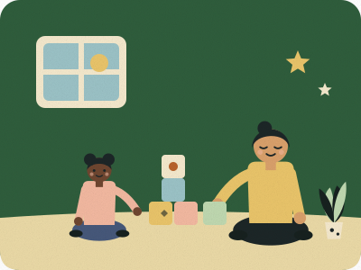

One-to-One ABA Therapy
For autistic children & teens · home, center or school
Direct, play-based sessions that teach communication, daily-living, social and coping skills one small step at a time. Sessions are led by trained behavior technicians and supervised by your BCBA, who reviews progress data every week and adjusts the plan.
What to expect
- Goals chosen with your family — things that matter at home and school, not just in a clinic.
- Natural-environment teaching: learning built into play, routines and real activities.
- Weekly data you can actually read, with regular parent check-ins.